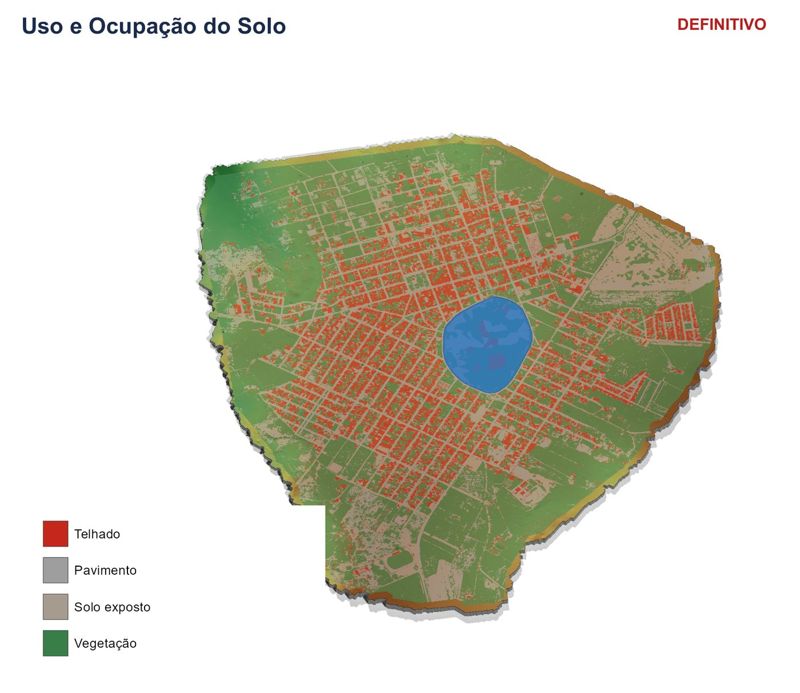
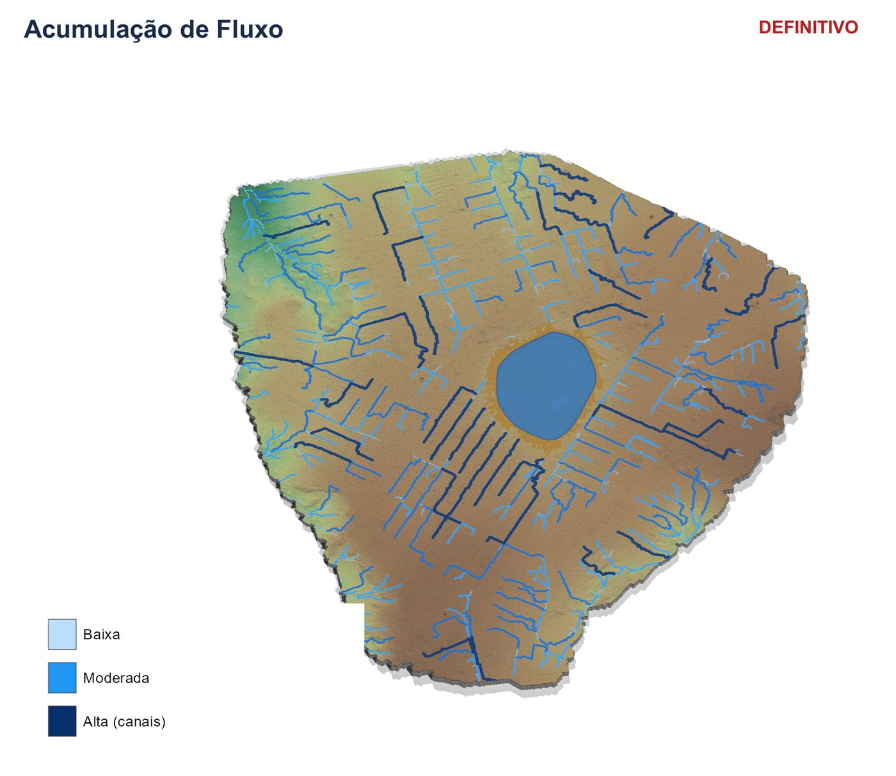
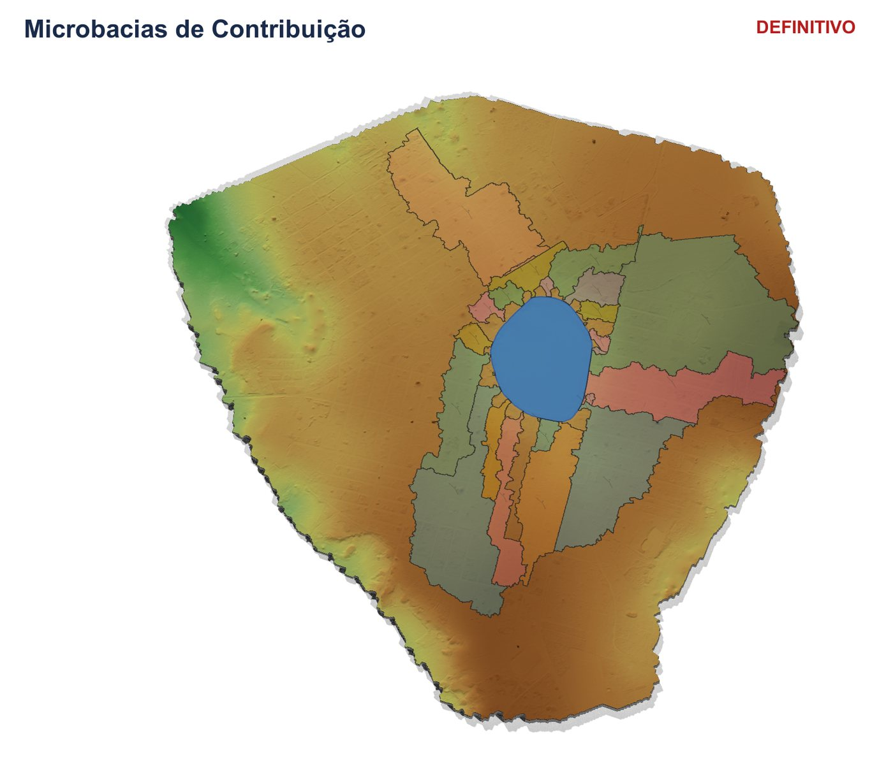
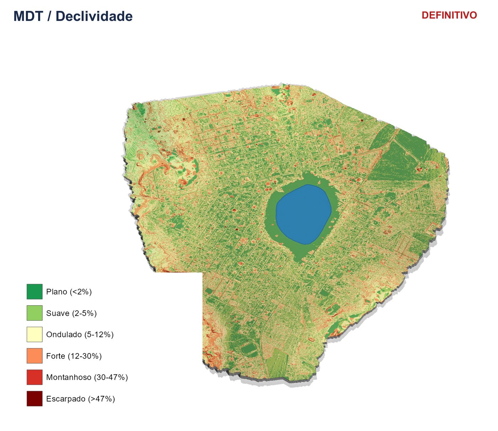

animação esquemática
blueprint 2.5D: passe o cursor nas camadas




★ projeto estrela2026
Diagnóstico hidrológico de Lagoa Grande
O diagnóstico de uma cidade que alaga, feito sobre um modelo de terreno de 0,5 m e fechado com a vazão de projeto de cada entrada de água na lagoa.
Lagoa Grande (MG), na bacia do São Francisco, cresceu em volta de uma lagoa de cerca de 20 ha e tem histórico de alagamentos. A prefeitura contratou a GFX GEO para entender por onde a água corre, onde acumula e o que priorizar. A área levantada por drone tem cerca de 540 ha.
- Desenhei e programei, em R e Python, o pipeline que leva do modelo de terreno aos 15 mapas temáticos, parametrizado e reprodutível.
- Troquei a base da fase preliminar (satélite) pelo MDT do drone e integrei a batimetria da lagoa ao terreno.
- Classifiquei o uso do solo da ortofoto com Random Forest: telhado, pavimento, solo exposto, vegetação e água.
- Delimitei as bacias urbanas sem preencher depressões, com a lagoa como sumidouro, que é como a cidade de fato se comporta.
- Calculei acumulação de fluxo, HAND, RUSLE e um índice composto para hierarquizar intervenções.
- Montei a planilha do Método Racional por bacia, com a curva IDF local e cenários alternativos documentados.
- Geomorfometria sobre MDT de 0,5 m: D8, HAND, Strahler, SPI e STI.
- Random Forest sobre bandas RGB, índices espectrais e altura normalizada (nDSM).
- RUSLE para suscetibilidade à erosão.
- Índice de prioridade composto, com pesos explícitos e agregado por bacia.
- Método Racional com C = 0,80 e tempo de retorno de 25 anos.
- 15 produtos cartográficos em 3D, planilha hidrológica e dados vetoriais entregues.
- 26 bacias de contribuição, 175 ha de área urbana contribuinte e 59,24 m³/s na soma das vazões de projeto.
- Cerca de 36% da área levantada é impermeável (telhado e pavimento).
- Ressalva registrada na entrega: uma bacia ficou truncada na borda do voo e tem vazão subestimada.
- R
- Python
- GRASS GIS
- WhiteboxTools
- scikit-learn
- rayshader
- geopandas
- rasterio
- ArcGIS Pro